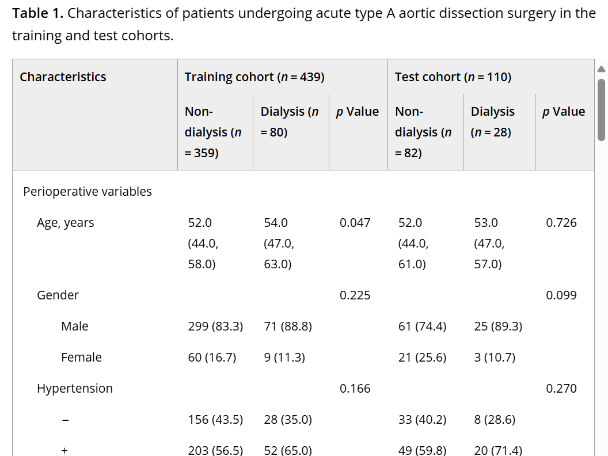
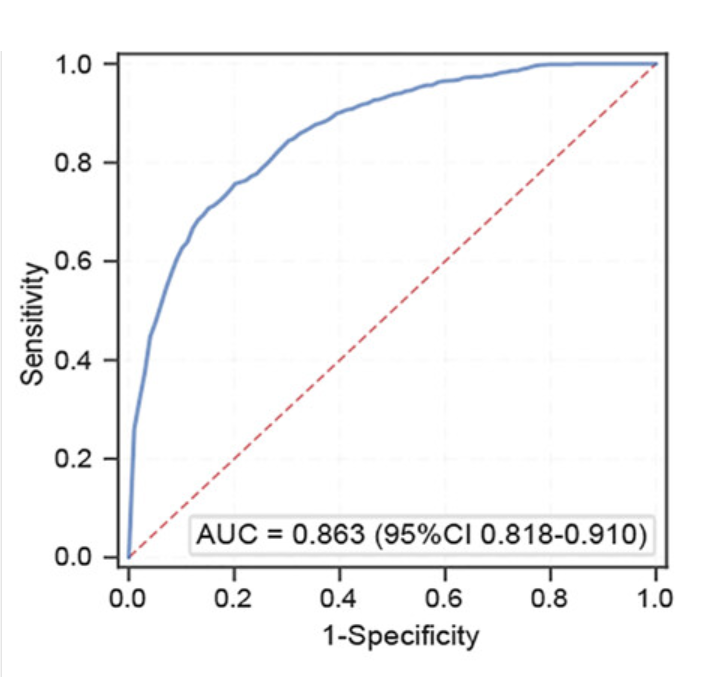
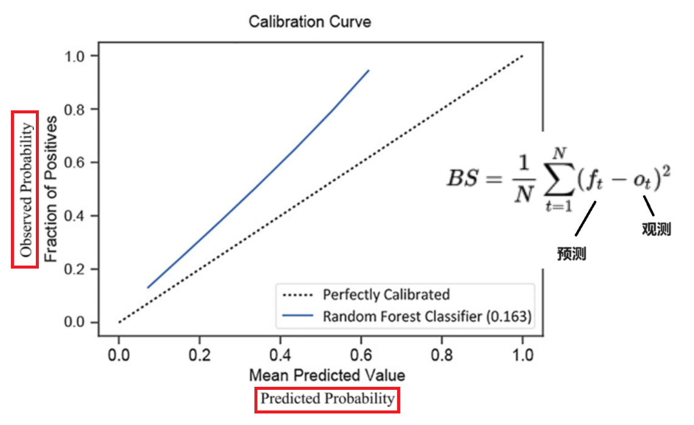
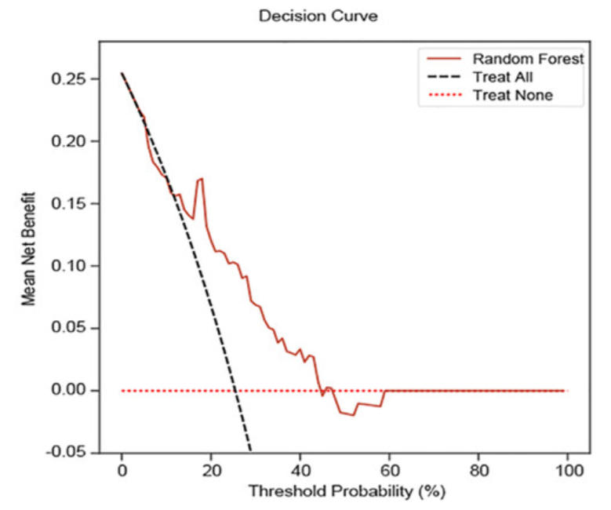
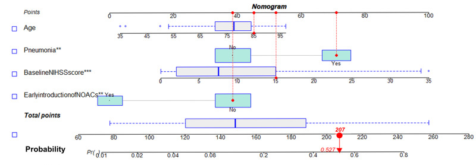
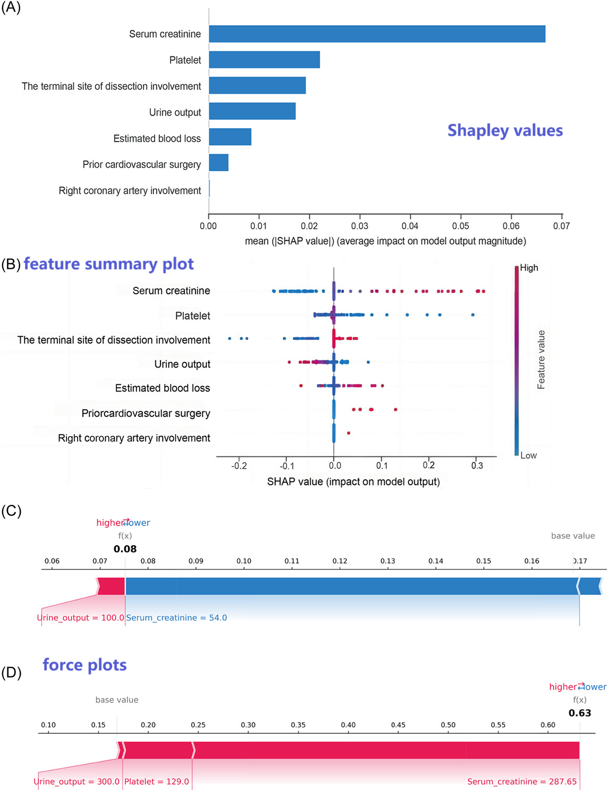

Public Health
根据视频导读 链接1/链接2，列举一些流行病学研究中常见的分析
其流程不外乎：强烈建议这个R教程
1. 筛选变量
2. 建立模型
3. 模型评价/应用，特征的重要程度
数据获取：eICU Collaborative Research Database，Pubmed文献整合，队列
0.流程图/数据清洗
（Precise risk-prediction model including arterial stiffness for new-onset atrial fibrillation using machine learning techniques）在 Supplementary 中清晰说明如何进行Pubmed检索
| Item number | Search term(s) |
|---|---|
| 1 | “prevalence” OR “incidence” OR “population” |
| 2 | “atrial fibrillation” OR “atrial flutter” |
| 3 | “ROC Curve” OR “Discrimination” OR “c-statistic” OR “c statistic” OR “Area under the curve” OR “AUC” OR “Calibration” OR “Algorithm” OR “Multivariable” |
| 4 | No.1 AND No.2 AND No.3 |
| 5 | “machine learning” OR “deep learning” OR “artificial intelligence” |
| 6 | “atrial fibrillation” OR “atrial flutter” |
| 7 | “ROC Curve” OR “Discrimination” OR “c-statistic” OR “c statistic” OR “Area under the curve” OR “AUC” OR “Calibration” OR “Algorithm” OR “Multivariable” |
| 8 | No.5 AND No.6 AND No.7 |
正文中，必须清晰交代为何去除样本、有多少样本被去除(或被保留)
Baseline Table 中陈列各Feature的数据，并且展示健康组/疾病组之间是否有差异 P-val，可据此对变量进行初筛(先单后多)

1.筛选变量
过多的模型参数容易造成过拟合的问题，且（线性回归时）变量间的相关性会影响回归系数的准确解释。因此，我们需要先筛选变量，常用：
-
直接给模型加参数限制: LASSO
-
多重共线性检验
- 辅助回归：用自变量a构建关于其余自变量的线性回归模型，且计算出拟合优度R^2
- 方差膨胀系数 VIF = 1/(1-R^2)，VIF>15 可认定共线性存在（e.g.假设有ABC变量，用BC回归拟合A，用得到的R计算A的VIF）
-
向前逐步回归
2.模型
-
多元线性回归/Log回归
-
非线性回归: 限制性立方样条(RCS)，高次多项式模型？样条插值=分段？平滑连接？
-
传统ML手段：LightGBM/RF/XGBoost/SVM
-
深度学习
3.模型评价/应用
注意，公共卫生的情形一般是二分类
-
区分度--Delong检验+AUC

-
校准度--Hosmer-Lemeshow，Brier评分+Calibration curve 校准曲线: Predicted v.s Observed

-
临床效用--Decision analysis curve 决策曲线: 模型的获益 v.s. 对ALL/None进行干扰情形下的获益

-
应用--Nomogram: 给每个变量进行打分，总分对应着相应的事件概率

-
变量解释--SHAP/DALEX(e.g.)
